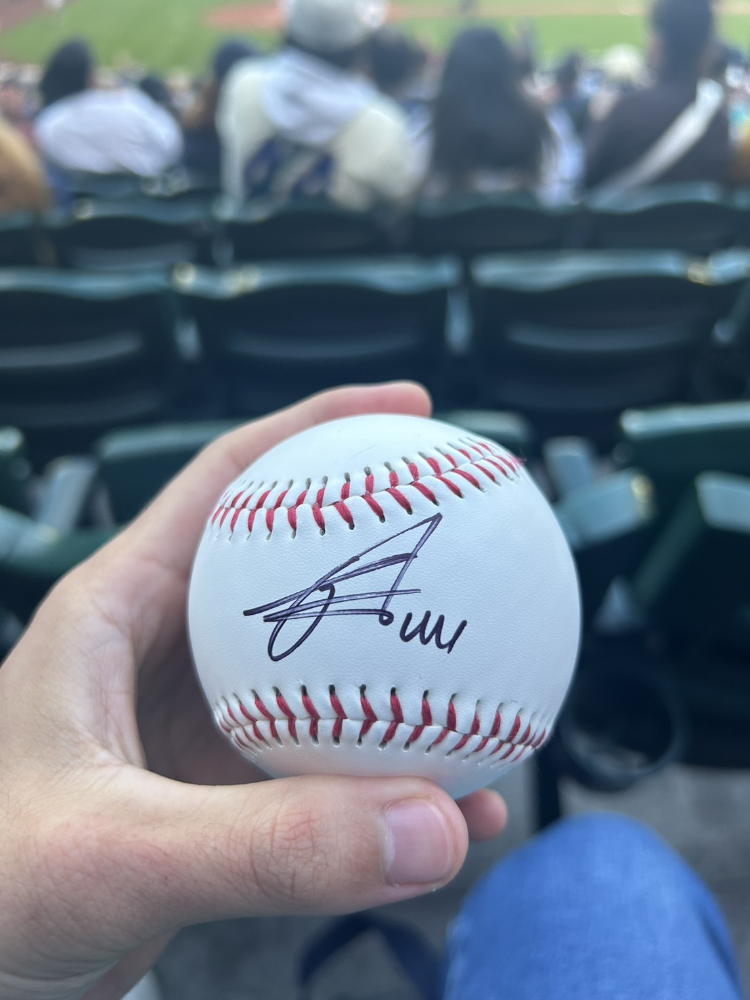
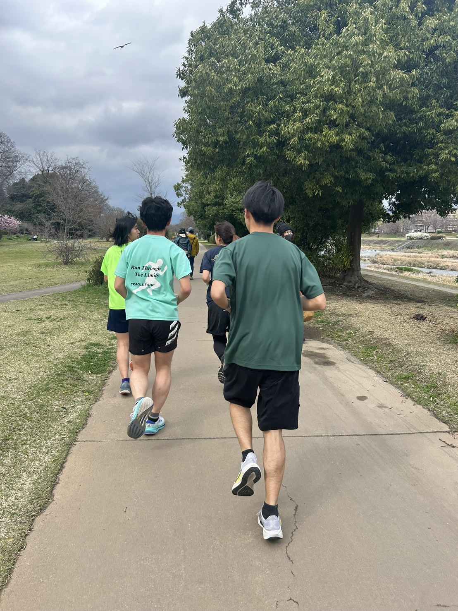

プロフィール 👤

研究関心 🔬
- 計量経済学
- 因果推論
- 実証産業組織論
執筆中の論文・プロジェクト 📄
Short-Term Contracts and Posting Fee Underpayment
資格 🏅
- TOEIC 915点（2023年9月）
- データサイエンティスト検定 リテラシーレベル（2024年3月）
- 英検 準1級（2022年9月）
- 統計検定 準1級（2026年2月）
趣味 🎬⚾🧭




